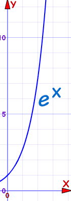

Exponential Growth and Decay
Exponential growth can be amazing!
The idea: something always grows in relation to its current value, such as always doubling.
Example: If a population of rabbits doubles every month, we would have 2, then 4, then 8, 16, 32, 64, 128, 256, etc!
Amazing Tree
Let us say we have this special tree.
It grows exponentially , following this formula:
Height (in mm) = ex
e is Euler's number, about 2.718

- At 1 year old it is: e1 = 2.7 mm high ... really tiny!
- At 5 years it is: e5 = 148 mm high ... as high as a cup
- At 10 years: e10 = 22 m high ... as tall as a building
- At 15 years: e15 = 3.3 km high ... 10 times the height of the Eiffel Tower
- At 20 years: e20 = 485 km high ... up into space!
No tree could ever grow that tall.
So when people say "it grows exponentially" ... just think what that means.
Growth and Decay
But sometimes things can grow (or the opposite: decay) exponentially, at least for a while.
So we have a generally useful formula:
y(t) = a × ekt
Where y(t) = value at time "t"
a = value at the start
k = rate of growth (when >0) or decay (when <0)
t = time
Example: 2 months ago you had 3 mice, you now have 18.
|
Assuming the growth continues like that
|
Start with the formula:
y(t) = a × ekt
We know a=3 mice, t=2 months, and right now y(2)=18 mice:
18 = 3 × e2k
Now some algebra to solve for k:
Notes:
- The step where we used ln(ex)=x is explained at Exponents and Logarithms.
- we could calculate k ≈ 0.896, but it is best to keep it as k = ln(6)/2 until we do our final calculations.
We can now put k = ln(6)/2 into our formula from before:
y(t) = 3 e(ln(6)/2)t
Now let's calculate the population in 2 more months (at t=4 months):
y(4) = 3 e(ln(6)/2)×4 = 108
And in 1 year from now (t=14 months):
y(14) = 3 e(ln(6)/2)×14 = 839,808
That's a lot of mice! I hope you will be feeding them properly.
Exponential Decay
Some things "decay" (get smaller) exponentially.
Example: Atmospheric pressure (the pressure of air around you) decreases as you go higher.
It decreases about 12% for every 1000 m: an exponential decay.
The pressure at sea level is about 1013 hPa (depending on weather).
- Write the formula (with its "k" value),
- Find the pressure on the roof of the Empire State Building (381 m),
- and at the top of Mount Everest (8848 m)
Start with the formula:
y(t) = a × ekt
We know
- a (the pressure at sea level) = 1013 hPa
- t is in meters (distance, not time, but the formula still works)
- y(1000) is a 12% reduction on 1013 hPa = 891.44 hPa
So:
891.44 = 1013 ek×1000
Now some algebra to solve for k:
Now we know "k" we can write:
y(t) = 1013 e(ln(0.88)/1000)×t
And finally we can calculate the pressure at 381 m, and at 8848 m:
y(381) = 1013 e(ln(0.88)/1000)×381 = 965 hPa
y(8848) = 1013 e(ln(0.88)/1000)×8848 = 327 hPa
(In fact pressures at Mount Everest are around 337 hPa ... good calculations!)
Half Life
The "half life" is how long it takes for a value to halve with exponential decay.
Commonly used with radioactive decay, but it has many other applications!
Example: The half-life of caffeine in your body is about 6 hours. If you had 1 cup of coffee 9 hours ago how much is left in your system?
Start with the formula:
y(t) = a × ekt
We know:
- a (the starting dose) = 1 cup of coffee!
- t is in hours
- at y(6) we have a 50% reduction (because 6 is the half life)
So:
0.5 = 1 cup × e6k
Now some algebra to solve for k:
Now we can write:
y(t) = 1 e(ln(0.5)/6)×t
In 6 hours:
y(6) = 1 e(ln(0.5)/6)×6 = 0.5
Which is correct as 6 hours is the half life
And in 9 hours:
y(9) = 1 e(ln(0.5)/6)×9 = 0.35
After 9 hours the amount left in your system is about 0.35 of the original amount. Have a nice sleep :)
Have a play with the Half Life of Medicine Tool to get a good understanding of this.